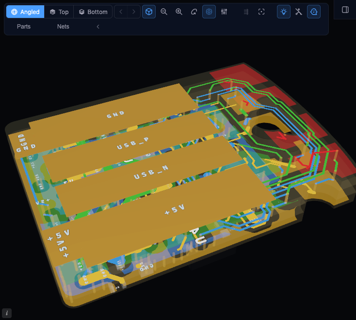
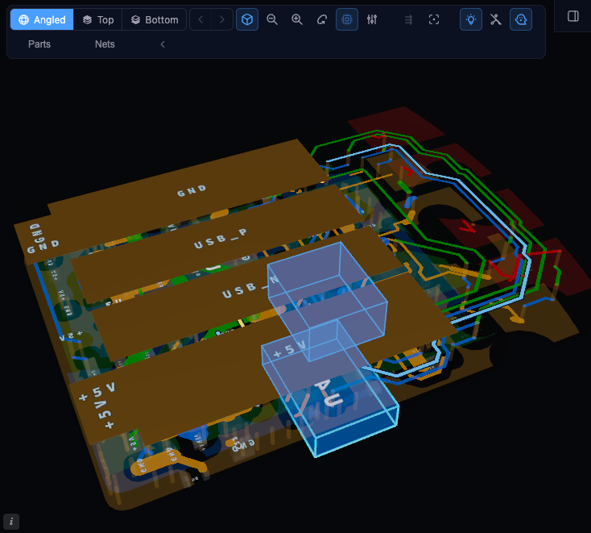
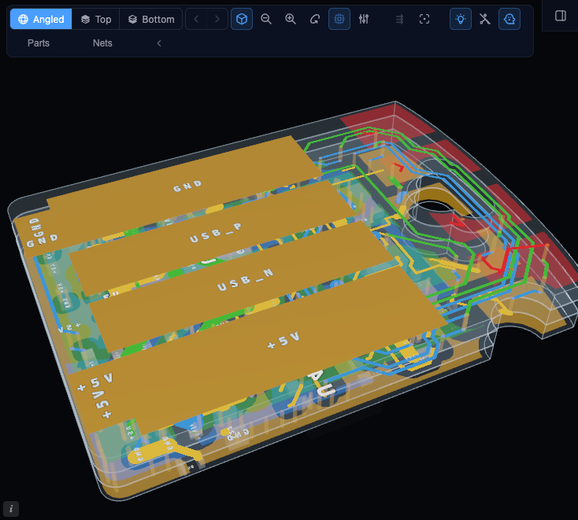
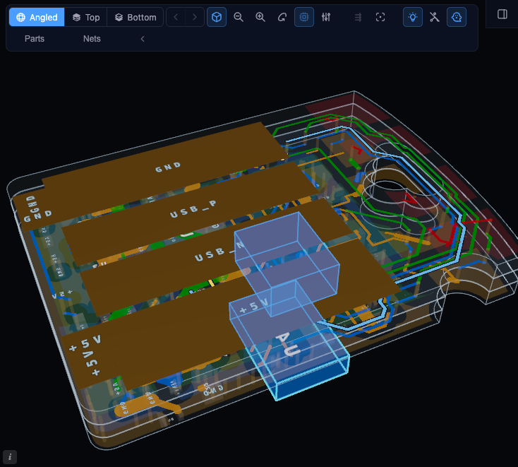
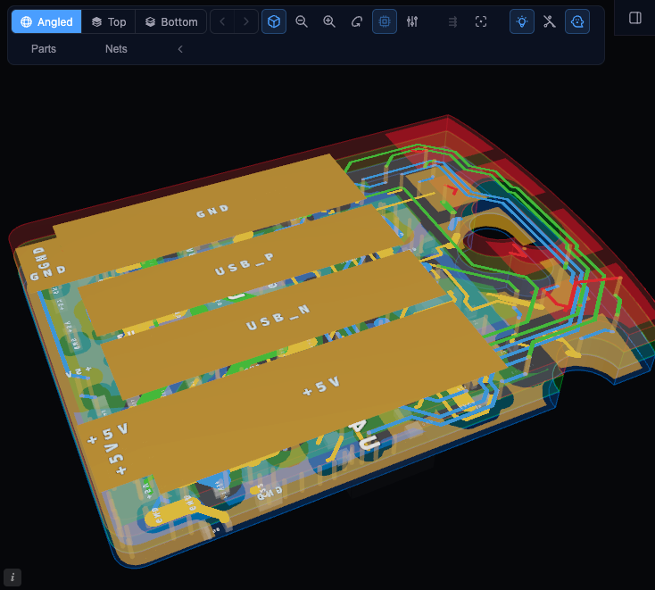
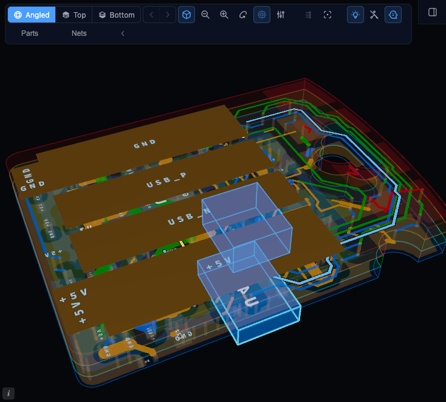
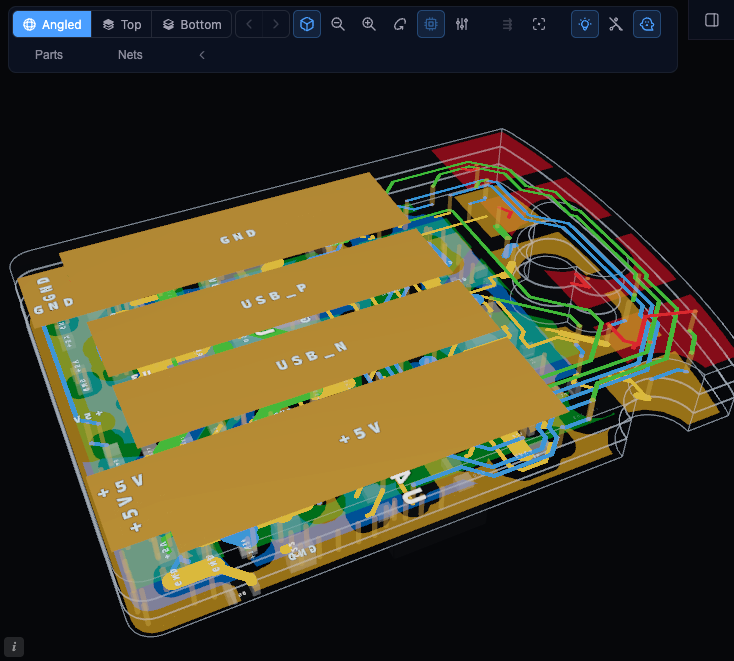
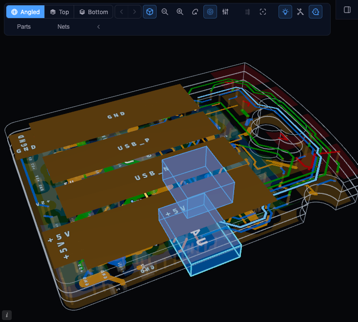

Public KiCad sample (tomu-fpga, 4 layers) with Copper layers on and parts ghosted. Left: nothing selected. Right: one net lit (SPI_MISO). The large brown plates on top are this board's gold USB contacts, not the board material. Every look is live on rd-nas:1234 under 3D settings ▸ Board look; Smoke is the current default.







